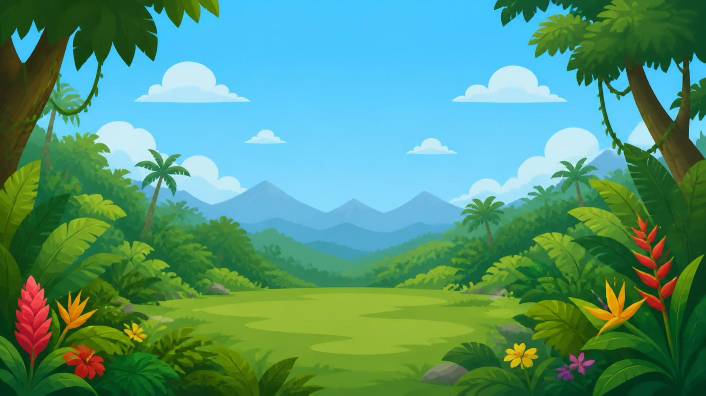

World one
Weather Control
A valley, a sky, and a child who owns it. Arms overhead gather cloud until it is heavy enough to rain. A sweep takes the rain sideways. A jump cracks thunder. Arms lowered and spread bring the sun back.
The child sees themselves inside the scene, cut out from the room behind them.